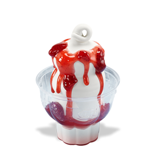
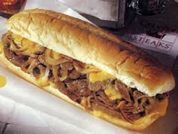
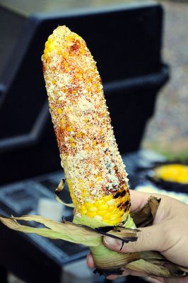
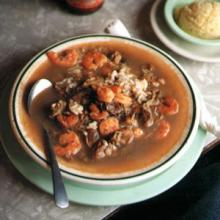
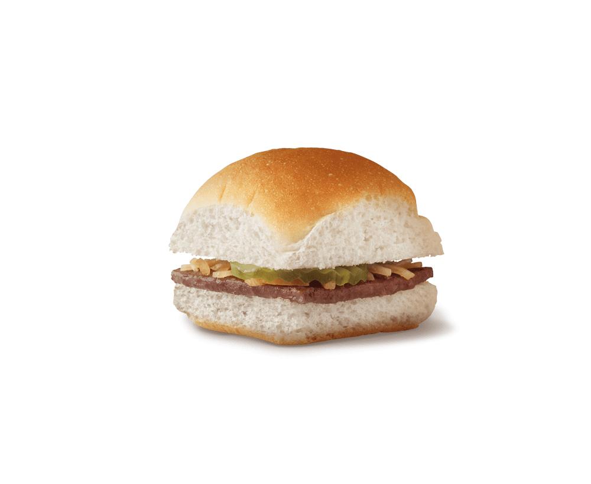

MY FAVORITE THINGS TO EAT, IN THE CITIES WHERE I'VE LIVED.
- Edwardsville, Illinois
- Germantown, Pennsylvania
- Houston, Texas
- New Orleans, Louisiana
- St. Louis, Missouri
Edwardsville, Illinois
I lived in Edwardsville in the early 1980's. I attended the local college SIUE ( SOUTHERN ILLINOIS UNIVERSITY) for abaout a year. The main place to eat was a Dairy Queen. My favorite was the Strawberry Sundae, a double burger with all the fixins and onion rings.
Germantown, Pennsylvania
This city was so cool. It had the feel of a quaint little town. I remember there were street vendors and local artist performing for donations just walking distance from where I lived. I loved the Philly cheesteak sandwiches and Hand tossed Pizzas. So cheesy, greasy and delicious.
Houston, Texas
Wow! I loved living here and I would say I was officially a Houstonian. This was my home for over 10 years. It was voted Fat city for many years. The cuisine was second to none due to the diversity of the residents. You name it you could find it to eat. To me all the food had a Texas flare! Literally, all my favorites here were flame grilled and scrumptious. The street truck corn on the cob, Barbeque brisket, grilled fish served cajun style or Tex-Mex tacos.
New Orleans, Louisiana
Home of the Gumbos, Shrimp boils, the Hurricane cocktail and beignets. Need i say more? This is where I learned to season and mix together foods that I had never eaten in my life. Crawfish, turkey necks, frog legs, alligator, 10 Million Dollar pound cake, Crawfish cornbread, Tony Cachere seasoning, and on and on. Another city that is usually on the top 10, Fat city list!
St. Louis, Missouri
My home town. This is where it all started for me. I grew up, with unforgettable Sunday dinners, family cookouts, extravagant Holiday feasts and all kinds of celebrations. My mother loved setting her table with lavish sterling silver, lace and her best china whenever she got the chance. Food was the cornerstone of our family life, probably why I love to cook today. On the weekends we would eat White Castles, Steak n Shake, Sarah Lou shrimp plates, Barbeque rib tip sandwiches with potatoe salad on the bottom and the white bread soked in sauce. One of my most favorites dishes even today is Asian cuisine or as we used to call it , "Chineese Food". I would get a half order shrimp fried rice with extra shrim , bean sprouts, green pepper and a fried egg on top. Did I mention, The famous St. paul sandwich only sold in St. louis, Chop Suey restaurants. Oh yeah!,Imos pizza, toasted ravioli and Velvet Freeze hand packed ice cream Now that I have travelled quite extensively over the years and become more concerned about my health. My favorite food are more vegetable based items. I love hearty salads, soups and artesian style whole grain breads. I love cooking and eating at home, where I can put in my favorite ingredient, Love. Its good to be home again!
